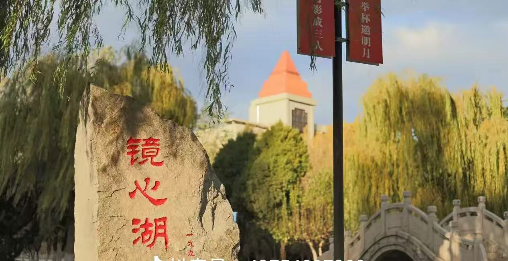
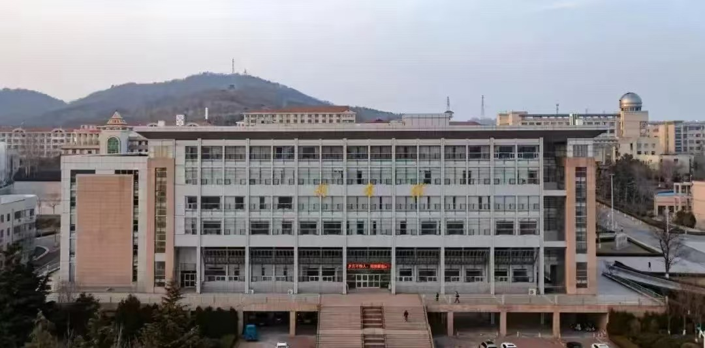
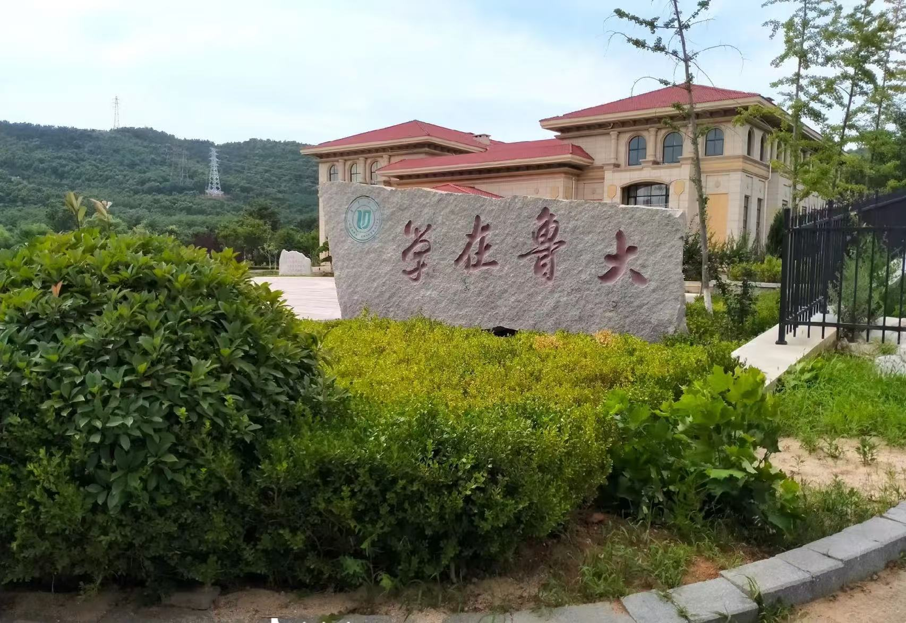

春风吹绿了胶东半岛，也吹醒了坐落在芝罘山下的鲁东大学。行走在校园的主干道上，首先映入眼帘的是南门两侧历经岁月洗礼的古槐，枝繁叶茂，郁郁葱葱。春日里，嫩绿的叶片在阳光下闪烁着金光，仿佛在向每一位归来的学子诉说着这所百年学府的历史厚重感。沿着林荫大道向北漫步，便来到了学校标志性的沁湖湖畔。湖面波光粼粼，清澈见底，湖畔的垂柳抽出了新绿的枝条，柔软地垂落在水面，随风摇曳。湖中央的九曲桥蜿蜒曲折，连接着湖的两岸，桥上常有驻足赏景的同学，他们的身影倒映在湖水中，构成了一幅动静结合的春日美图。湖边的草坪早已铺上了一层碧绿的地毯，二月兰、蒲公英等小花点缀其间，五颜六色，生机勃勃。
再往深处走，便是鲁东大学著名的“后山”区域。这里没有城市的喧嚣，只有大自然的宁静与美好。漫山遍野的槐树在春日里竞相开放，雪白的槐花挂满枝头，空气中弥漫着浓郁的甜香。拾级而上，既能看到陡峭的山坡展现出的坚韧生命力，也能看到山顶处俯瞰整个校园的壮丽景色。远处，黄海的波光若隐若现，近处，错落有致的教学楼、宿舍楼掩映在一片翠绿之中，尽显鲁东大学“山海相依”的独特风光。每到春日，这里便是同学们徒步、踏青、写生的绝佳去处，呼吸着清新的空气，感受着万物复苏的气息，让人瞬间忘却学习的疲惫。


